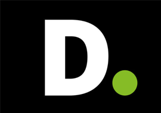
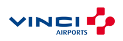
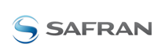

- - Lost Ark - F2P
- - Dota 2 - F2P + tournois
- - Fortnite - F2P
- - Elden Ring - Premium (possible DLC ?)
- - Don’t starve together - Payant de base + DLC et skins + promotions
- - Call of duty Warzone + retail + battle pass + cosmétiques
Portfolio
Etudes Monétisation
Afin d’avoir des expériences dans le monde du jeu vidéo et d’approfondir ma connaissance du milieu notamment dans le domaine de monétisation, j’ai eu l’opportunité de travailler sur différents cas d’études ainsi que d’accompagner des studios indépendants sur des thématiques financières.
Etudes de stratégies monétaires
Accompagnement de Wild Wits Game
Mission principale : Elaboration d’un plan financier prévisionnel sur 5 ans (2 ans avant release du jeu et 3 ans post-release) avec calcul d’un seuil de rentabilité en fonction de 3 scénarios de ventes possibles
- Appui à l’élaboration de la stratégie marketing et optimisation des coûts découlant de ces prévisions
- Aide au suivi de l'activité avec un suivi d'indicateurs principaux et de comparaison entre le prévisionnel et le réel
Mission secondaire : Appui à la formalisation du business plan
Accompagnement de GoodLabGame
Mission principale : Modélisation de trois scénario de business model possibles afin d’aider à la prise de décisions sur le modèle économique final du jeu
Appui à la gestion de projet et à la formalisation de la road map
Accompagnement de Seenapsics
Elaboration d’un plan financier prévisionnel sur 5 ans (2 ans avant release du jeu et 3 ans post-release) avec calcul d’un seuil de rentabilité en fonction de 3 scénarios de ventes possibles
- Appui à l’élaboration de la stratégie marketing et optimisation des coûts découlant de ces prévisions
- Aide à l’élaboration d’un bilan mensuel avec suivi des indicateurs principaux et de comparaison entre le prévisionnel et le réel
Comparaison et analyse des différents types de financements et de leurs synergies au regard du contexte et des besoins de la société pour aider à la prise de décisions.
- Mise en place d’un tableau récapitulatif des différents types de financements possibles
- Elaboration de scénario avec des répartitions différentes entre les différents financements afin d'aider à la prise de décisions

Projet Gaming Campus
Afin d’acquérir des connaissances sur le process de création d’un jeu vidéo, j’ai choisi de suivre une formation de Game Design dispensée par Gaming Campus. Cela m’a permis de faire un tour d’horizon sur l’ensemble des compétences et des métiers qui travaillent en coordination pour créer un jeu, avec un approfondissement particulier sur le fonctionnement de deux moteurs de jeux : Unity et Unreal Engine 4.
En savoir plus
EXPERIENCES PROFESSIONNELLES

Senior Consultante en Système d’information, organisation et processus

Aujourd'hui - 11/2018 (3ans)

Nantes
DBShenker - cartographie des process MDM
Présentation de la mission
Animation d’ateliers et d’entretiens afin de diagnostiquer l’existant et de cerner les irritants, élaboration de flowcharts pour modéliser les process MDM.
Livrable clés : Cartographie des process MDM - Recommandations de fonctionnement cible
SNCF - AMOA pour la refonte du Back Office
Présentation de la mission
Technologie : SAP ECC – Module SD et Module CAR
Assistance à la recette
- Préparation et pilotage du déploiement et de la mise en service : gestion des impacts organisationnels & humains
- Elaboration de la stratégie de recette
- Préparation des cahiers de test et des jeux de données
- Réalisation de la recette et analyses fonctionnelles des anomalies
- Assistance des utilisateurs / testeurs dans le déroulement de la recette
Assistance dans la conduite du changement
- Préparation et animation des ateliers pour former les étapes opérationnelles
- Conception et communication de procédures
Assistance au pilotage de projet
- Aide à la conception et élaboration du delivery, du planning, à la gestion des risques et la mise d’indicateur de performance et de reporting
Livrables clés : plan de recette, rétro-planning, analyses fonctionnelles
DGEFP - Elaboration de la Feuille de route Data (en cours)
Présentation de la mission
- Définition du cadre méthodologique et cadrage du projet
-
Elaboration des feuilles de routes macro :
- Création et construction d’ateliers collaboratifs pour capter les enjeux data des métiers
- Animation des ateliers et conduite des entretiens avec les métiers
- Mise en place d’une présentation de retours d’expérience au regard du contexte client
Livrables clés : Fiches projets

STAGE - Accompagnement sur le projet de bascule vers l’ERP Sage ERP X3
2018 (6 mois)
Nantes
Présentation de la mission
Fiabilisation du système d'information et de la cohérence entre deux référentiels comptables de l'entreprise.
- Travail sur la mise en place du nouveau progiciel de Gestion Sage ERP X3 notamment sur la cohérence des référentiels
- Travail sur le transcodage de la comptabilité analytique de l'entreprise
Soutien aux missions quotidiennes des contrôleurs de gestion :
- Mise à jour de l'historique du trafic
- Travail sur la déclaration des immobilisations pour la taxe aéroport
- Aide aux calculs des coûts et analyse des écarts pour aider à la prise de décision

STAGE - Contrôle de Gestion
2017 (6 mois)
Bordes
Présentation de la mission
Préparation et gestion du processus budgétaire
- Elaboration des fichiers et formation aux responsables de business units
- Planification et présentation du processus budgétaire (échéances), animation des ateliers d’élaboration du budget
- Aide à la synthèse et la consolidation des fichiers
Amélioration des outils de gestion et des processus, assistance au pilotage financier
- Amélioration, mise en place et exploitation des indicateurs financiers mensuels
- Mise à jour des BS et des requêtes SAP, actualisation des outils de visualisation et analyses des écarts
- Recommandations pour améliorer les marges et aide à l’arbitrage
Soutien aux contrôleurs de gestion (Inventaire 2017, migration de BDD Access sur Excel, Consolidation des effectifs...)
Télécharger le mémoire professionnel